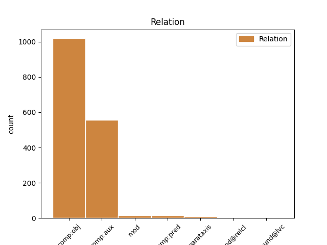
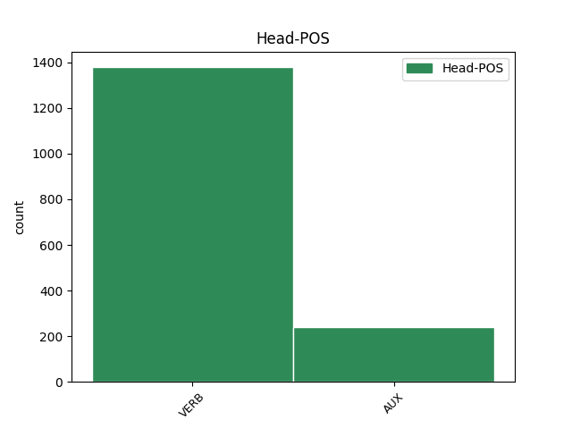
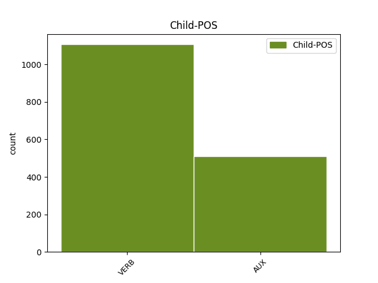

Distribution of features within this leaf



Agreement Rules sorted by frequency.
- When the dependent token is the direct object complements(comp:obj) of the head token, and the head token is VERB and the dependent token is VERB.
1 گزارش _ _ _ _ 0 _ _ _
2 دفتر _ _ _ _ 0 _ _ _
3 همآهنگکننده _ _ _ _ 0 _ _ _
4 امور _ _ _ _ 0 _ _ _
5 بشردوستانه _ _ _ _ 0 _ _ _
6 سازمان _ _ _ _ 0 _ _ _
7 ملل _ _ _ _ 0 _ _ _
8 میگوید گفت#گو VERB V_PRS Number=Sing|Person=3|Tense=Pres 0 _ _ _
9 : _ _ _ _ 0 _ _ _
10 در _ _ _ _ 0 _ _ _
11 زمینه _ _ _ _ 0 _ _ _
12 کمکهای _ _ _ _ 0 _ _ _
13 بینالمللی _ _ _ _ 0 _ _ _
14 نیز _ _ _ _ 0 _ _ _
15 دولت _ _ _ _ 0 _ _ _
16 ایران _ _ _ _ 0 _ _ _
17 به _ _ _ _ 0 _ _ _
18 دفتر _ _ _ _ 0 _ _ _
19 سازمان _ _ _ _ 0 _ _ _
20 ملل _ _ _ _ 0 _ _ _
21 در _ _ _ _ 0 _ _ _
22 تهران _ _ _ _ 0 _ _ _
23 اطلاع _ _ _ _ 0 _ _ _
24 داده _ _ _ _ 0 _ _ _
25 است است VERB V_PRS Number=Sing|Person=3|Tense=Pres 8 comp:obj _ _
26 که _ _ _ _ 0 _ _ _
27 امکان _ _ _ _ 0 _ _ _
28 پذیرش _ _ _ _ 0 _ _ _
29 این _ _ _ _ 0 _ _ _
30 گونه _ _ _ _ 0 _ _ _
31 کمکها _ _ _ _ 0 _ _ _
32 جهت _ _ _ _ 0 _ _ _
33 حمایت _ _ _ _ 0 _ _ _
34 از _ _ _ _ 0 _ _ _
35 تلاشهای _ _ _ _ 0 _ _ _
36 امدادی _ _ _ _ 0 _ _ _
37 مراجع _ _ _ _ 0 _ _ _
38 ذیربط _ _ _ _ 0 _ _ _
39 داخلی _ _ _ _ 0 _ _ _
40 وجود _ _ _ _ 0 _ _ _
41 دارد _ _ _ _ 0 _ _ _
42 . _ _ _ _ 0 _ _ _
1 ۷ _ _ _ _ 0 _ _ _
2 - _ _ _ _ 0 _ _ _
3 رؤفت _ _ _ _ 0 _ _ _
4 و _ _ _ _ 0 _ _ _
5 دلسوزی _ _ _ _ 0 _ _ _
6 نسبت _ _ _ _ 0 _ _ _
7 به _ _ _ _ 0 _ _ _
8 ایشان _ _ _ _ 0 _ _ _
9 شما _ _ _ _ 0 _ _ _
10 را _ _ _ _ 0 _ _ _
11 از _ _ _ _ 0 _ _ _
12 اجرای _ _ _ _ 0 _ _ _
13 دین _ _ _ _ 0 _ _ _
14 الهی _ _ _ _ 0 _ _ _
15 باز _ _ _ _ 0 _ _ _
16 ندارد _ _ _ _ 0 _ _ _
17 ، _ _ _ _ 0 _ _ _
18 همان _ _ _ _ 0 _ _ _
19 پیامبری _ _ _ _ 0 _ _ _
20 که _ _ _ _ 0 _ _ _
21 نسبت _ _ _ _ 0 _ _ _
22 به _ _ _ _ 0 _ _ _
23 مؤمنان _ _ _ _ 0 _ _ _
24 رإف _ _ _ _ 0 _ _ _
25 و _ _ _ _ 0 _ _ _
26 مهربان _ _ _ _ 0 _ _ _
27 است _ _ _ _ 0 _ _ _
28 نمیتواند توانست#توان VERB V_PRS Number=Plur|Person=3|Polarity=Neg|Tense=Pres 0 _ _ _
29 در _ _ _ _ 0 _ _ _
30 اجرای _ _ _ _ 0 _ _ _
31 حد _ _ _ _ 0 _ _ _
32 الهی _ _ _ _ 0 _ _ _
33 نسبت _ _ _ _ 0 _ _ _
34 به _ _ _ _ 0 _ _ _
35 خیانتکار _ _ _ _ 0 _ _ _
36 به _ _ _ _ 0 _ _ _
37 واسطه _ _ _ _ 0 _ _ _
38 رؤفت _ _ _ _ 0 _ _ _
39 تعلل _ _ _ _ 0 _ _ _
40 ورزد ورزید#ورز VERB V_SUB Mood=Sub|Number=Sing|Person=3|Tense=Pres 28 comp:aux _ _
41 و _ _ _ _ 0 _ _ _
42 سرپیچی _ _ _ _ 0 _ _ _
43 کند _ _ _ _ 0 _ _ _
44 . _ _ _ _ 0 _ _ _
1 این _ _ _ _ 0 _ _ _
2 گزارش _ _ _ _ 0 _ _ _
3 میگوید _ _ _ _ 0 _ _ _
4 : _ _ _ _ 0 _ _ _
5 وزارت _ _ _ _ 0 _ _ _
6 کشور _ _ _ _ 0 _ _ _
7 ایران _ _ _ _ 0 _ _ _
8 اعلام _ _ _ _ 0 _ _ _
9 کرده _ _ _ _ 0 _ _ _
10 است _ _ _ _ 0 _ _ _
11 ، _ _ _ _ 0 _ _ _
12 که _ _ _ _ 0 _ _ _
13 مبلغی _ _ _ _ 0 _ _ _
14 معادل _ _ _ _ 0 _ _ _
15 ۲۰۰ _ _ _ _ 0 _ _ _
16 میلیون _ _ _ _ 0 _ _ _
17 دلار _ _ _ _ 0 _ _ _
18 کمک _ _ _ _ 0 _ _ _
19 فوری _ _ _ _ 0 _ _ _
20 مورد _ _ _ _ 0 _ _ _
21 نیاز _ _ _ _ 0 _ _ _
22 است است VERB V_PRS Number=Sing|Person=3|Tense=Pres 0 _ _ _
23 و _ _ _ _ 0 _ _ _
24 تا _ _ _ _ 0 _ _ _
25 کنون _ _ _ _ 0 _ _ _
26 نیز _ _ _ _ 0 _ _ _
27 دولت _ _ _ _ 0 _ _ _
28 ایران _ _ _ _ 0 _ _ _
29 یک _ _ _ _ 0 _ _ _
30 مجموعه _ _ _ _ 0 _ _ _
31 کمک _ _ _ _ 0 _ _ _
32 اضطراری _ _ _ _ 0 _ _ _
33 معادل _ _ _ _ 0 _ _ _
34 ۳۸۱ _ _ _ _ 0 _ _ _
35 میلیون _ _ _ _ 0 _ _ _
36 دلار _ _ _ _ 0 _ _ _
37 جهت _ _ _ _ 0 _ _ _
38 کمک _ _ _ _ 0 _ _ _
39 به _ _ _ _ 0 _ _ _
40 کشاورزان _ _ _ _ 0 _ _ _
41 خسارتدیده _ _ _ _ 0 _ _ _
42 از _ _ _ _ 0 _ _ _
43 خشکسالی _ _ _ _ 0 _ _ _
44 تصویب _ _ _ _ 0 _ _ _
45 نموده _ _ _ _ 0 _ _ _
46 است است AUX V_PRS Number=Sing|Person=3|Tense=Pres 22 comp:obj _ SpaceAfter=No
47 . _ _ _ _ 0 _ _ _
1 از _ _ _ _ 0 _ _ _
2 جانب _ _ _ _ 0 _ _ _
3 دیگر _ _ _ _ 0 _ _ _
4 ، _ _ _ _ 0 _ _ _
5 دو _ _ _ _ 0 _ _ _
6 جریان _ _ _ _ 0 _ _ _
7 انحراف _ _ _ _ 0 _ _ _
8 و _ _ _ _ 0 _ _ _
9 تحجر _ _ _ _ 0 _ _ _
10 برای _ _ _ _ 0 _ _ _
11 حفظ _ _ _ _ 0 _ _ _
12 و _ _ _ _ 0 _ _ _
13 بقای _ _ _ _ 0 _ _ _
14 خود _ _ _ _ 0 _ _ _
15 نیاز _ _ _ _ 0 _ _ _
16 به _ _ _ _ 0 _ _ _
17 همراه _ _ _ _ 0 _ _ _
18 کردن _ _ _ _ 0 _ _ _
19 دیگران _ _ _ _ 0 _ _ _
20 دارند _ _ _ _ 0 _ _ _
21 و _ _ _ _ 0 _ _ _
22 برای _ _ _ _ 0 _ _ _
23 دستیابی _ _ _ _ 0 _ _ _
24 به _ _ _ _ 0 _ _ _
25 این _ _ _ _ 0 _ _ _
26 منظور _ _ _ _ 0 _ _ _
27 به _ _ _ _ 0 _ _ _
28 درون _ _ _ _ 0 _ _ _
29 جناحهای _ _ _ _ 0 _ _ _
30 سیاسی _ _ _ _ 0 _ _ _
31 درون _ _ _ _ 0 _ _ _
32 نظام _ _ _ _ 0 _ _ _
33 نفوذ _ _ _ _ 0 _ _ _
34 میکنند _ _ _ _ 0 _ _ _
35 و _ _ _ _ 0 _ _ _
36 حتی _ _ _ _ 0 _ _ _
37 اگر _ _ _ _ 0 _ _ _
38 نتوانند توانست#توان AUX V_AUX Mood=Sub|Number=Plur|Person=3|Polarity=Neg|Tense=Pres|VerbForm=Fin 0 _ _ _
39 کلیه _ _ _ _ 0 _ _ _
40 آنها _ _ _ _ 0 _ _ _
41 را _ _ _ _ 0 _ _ _
42 با _ _ _ _ 0 _ _ _
43 خود _ _ _ _ 0 _ _ _
44 همراه _ _ _ _ 0 _ _ _
45 نمایند نمود#نما VERB V_SUB Mood=Sub|Number=Plur|Person=3|Tense=Pres 38 comp:aux _ SpaceAfter=No
46 ، _ _ _ _ 0 _ _ _
47 تلاش _ _ _ _ 0 _ _ _
48 میکنند _ _ _ _ 0 _ _ _
49 تا _ _ _ _ 0 _ _ _
50 با _ _ _ _ 0 _ _ _
51 دو _ _ _ _ 0 _ _ _
52 شیوه _ _ _ _ 0 _ _ _
53 : _ _ _ _ 0 _ _ _
54 با _ _ _ _ 0 _ _ _
55 یارگیری _ _ _ _ 0 _ _ _
56 از _ _ _ _ 0 _ _ _
57 میان _ _ _ _ 0 _ _ _
58 آنها _ _ _ _ 0 _ _ _
59 و _ _ _ _ 0 _ _ _
60 نفوذ _ _ _ _ 0 _ _ _
61 دادن _ _ _ _ 0 _ _ _
62 عناصر _ _ _ _ 0 _ _ _
63 مشکوک _ _ _ _ 0 _ _ _
64 به _ _ _ _ 0 _ _ _
65 درون _ _ _ _ 0 _ _ _
66 شان _ _ _ _ 0 _ _ _
67 ، _ _ _ _ 0 _ _ _
68 جبهه _ _ _ _ 0 _ _ _
69 خود _ _ _ _ 0 _ _ _
70 را _ _ _ _ 0 _ _ _
71 قوت _ _ _ _ 0 _ _ _
72 ببخشند _ _ _ _ 0 _ _ _
73 . _ _ _ _ 0 _ _ _
1 برخی _ _ _ _ 0 _ _ _
2 تفسیر _ _ _ _ 0 _ _ _
3 به _ _ _ _ 0 _ _ _
4 اصحاب _ _ _ _ 0 _ _ _
5 امیر _ _ _ _ 0 _ _ _
6 مؤمنان _ _ _ _ 0 _ _ _
7 ) _ _ _ _ 0 _ _ _
8 ع _ _ _ _ 0 _ _ _
9 ( _ _ _ _ 0 _ _ _
10 کردهاند _ _ _ _ 0 _ _ _
11 و _ _ _ _ 0 _ _ _
12 برخی _ _ _ _ 0 _ _ _
13 تفسیر _ _ _ _ 0 _ _ _
14 به _ _ _ _ 0 _ _ _
15 اصحاب _ _ _ _ 0 _ _ _
16 حضرت _ _ _ _ 0 _ _ _
17 قائم _ _ _ _ 0 _ _ _
18 ) _ _ _ _ 0 _ _ _
19 ع _ _ _ _ 0 _ _ _
20 ( _ _ _ _ 0 _ _ _
21 نمودهاند _ _ _ _ 0 _ _ _
22 که _ _ _ _ 0 _ _ _
23 همه _ _ _ _ 0 _ _ _
24 آنها _ _ _ _ 0 _ _ _
25 میتوانند توانست#توان VERB V_PRS Number=Plur|Person=3|Tense=Pres 0 _ _ _
26 مصادیقی _ _ _ _ 0 _ _ _
27 از _ _ _ _ 0 _ _ _
28 آیه _ _ _ _ 0 _ _ _
29 باشند بود#باش AUX V_SUB Mood=Sub|Number=Plur|Person=3|Tense=Pres 25 comp:aux _ SpaceAfter=No
30 . _ _ _ _ 0 _ _ _
1 موارد _ _ _ _ 0 _ _ _
2 متعددی _ _ _ _ 0 _ _ _
3 وجود _ _ _ _ 0 _ _ _
4 دارد _ _ _ _ 0 _ _ _
5 که _ _ _ _ 0 _ _ _
6 امام _ _ _ _ 0 _ _ _
7 حسین _ _ _ _ 0 _ _ _
8 ) _ _ _ _ 0 _ _ _
9 ع _ _ _ _ 0 _ _ _
10 ( _ _ _ _ 0 _ _ _
11 در _ _ _ _ 0 _ _ _
12 دهه _ _ _ _ 0 _ _ _
13 پنجاه _ _ _ _ 0 _ _ _
14 هر _ _ _ _ 0 _ _ _
15 وقت _ _ _ _ 0 _ _ _
16 ، _ _ _ _ 0 _ _ _
17 شرایط _ _ _ _ 0 _ _ _
18 مناسبی _ _ _ _ 0 _ _ _
19 پیش _ _ _ _ 0 _ _ _
20 میآمده _ _ _ _ 0 _ _ _
21 است است VERB V_PRS Number=Sing|Person=3|Tense=Pres 35 mod _ _
22 ناخشنودی _ _ _ _ 0 _ _ _
23 خود _ _ _ _ 0 _ _ _
24 را _ _ _ _ 0 _ _ _
25 نسبت _ _ _ _ 0 _ _ _
26 به _ _ _ _ 0 _ _ _
27 حکومت _ _ _ _ 0 _ _ _
28 معاویه _ _ _ _ 0 _ _ _
29 و _ _ _ _ 0 _ _ _
30 نیز _ _ _ _ 0 _ _ _
31 شخص _ _ _ _ 0 _ _ _
32 یزید _ _ _ _ 0 _ _ _
33 اعلام _ _ _ _ 0 _ _ _
34 میکرده _ _ _ _ 0 _ _ _
35 است است VERB V_PRS Number=Sing|Person=3|Tense=Pres 0 _ _ _
36 . _ _ _ _ 0 _ _ _
1 احمد _ _ _ _ 0 _ _ _
2 به _ _ _ _ 0 _ _ _
3 گوشه _ _ _ _ 0 _ _ _
4 تختهسیاه _ _ _ _ 0 _ _ _
5 مینگرد نگریست#نگر VERB V_PRS Number=Sing|Person=3|Tense=Pres 0 _ _ _
6 : _ _ _ _ 0 _ _ _
7 « _ _ _ _ 0 _ _ _
8 هشت _ _ _ _ 0 _ _ _
9 ساعت _ _ _ _ 0 _ _ _
10 به _ _ _ _ 0 _ _ _
11 افطار _ _ _ _ 0 _ _ _
12 مانده _ _ _ _ 0 _ _ _
13 » _ _ _ _ 0 _ _ _
14 نظر _ _ _ _ 0 _ _ _
15 ش _ _ _ _ 0 _ _ _
16 را _ _ _ _ 0 _ _ _
17 جلب _ _ _ _ 0 _ _ _
18 میکند کرد#کن VERB V_PRS Number=Sing|Person=3|Tense=Pres 5 parataxis _ SpaceAfter=No
19 . _ _ _ _ 0 _ _ _
1 وی _ _ _ _ 0 _ _ _
2 دومین _ _ _ _ 0 _ _ _
3 عامل _ _ _ _ 0 _ _ _
4 ناموفق _ _ _ _ 0 _ _ _
5 بودن _ _ _ _ 0 _ _ _
6 تلاش _ _ _ _ 0 _ _ _
7 مخالفان _ _ _ _ 0 _ _ _
8 خاتمی _ _ _ _ 0 _ _ _
9 را _ _ _ _ 0 _ _ _
10 حمایت _ _ _ _ 0 _ _ _
11 جدی _ _ _ _ 0 _ _ _
12 رهبری _ _ _ _ 0 _ _ _
13 از _ _ _ _ 0 _ _ _
14 وی _ _ _ _ 0 _ _ _
15 عنوان _ _ _ _ 0 _ _ _
16 کرد _ _ _ _ 0 _ _ _
17 و _ _ _ _ 0 _ _ _
18 افزود _ _ _ _ 0 _ _ _
19 : _ _ _ _ 0 _ _ _
20 شخص _ _ _ _ 0 _ _ _
21 و _ _ _ _ 0 _ _ _
22 دولت _ _ _ _ 0 _ _ _
23 آقای _ _ _ _ 0 _ _ _
24 خاتمی _ _ _ _ 0 _ _ _
25 بجز _ _ _ _ 0 _ _ _
26 وزارت _ _ _ _ 0 _ _ _
27 فرهنگ _ _ _ _ 0 _ _ _
28 و _ _ _ _ 0 _ _ _
29 ارشاد _ _ _ _ 0 _ _ _
30 اسلامی _ _ _ _ 0 _ _ _
31 مورد _ _ _ _ 0 _ _ _
32 تایید _ _ _ _ 0 _ _ _
33 رهبری _ _ _ _ 0 _ _ _
34 است _ _ _ _ 0 _ _ _
35 ، _ _ _ _ 0 _ _ _
36 و _ _ _ _ 0 _ _ _
37 ایشان _ _ _ _ 0 _ _ _
38 تا _ _ _ _ 0 _ _ _
39 کنون _ _ _ _ 0 _ _ _
40 به _ _ _ _ 0 _ _ _
41 طور _ _ _ _ 0 _ _ _
42 جدی _ _ _ _ 0 _ _ _
43 از _ _ _ _ 0 _ _ _
44 دولت _ _ _ _ 0 _ _ _
45 آقای _ _ _ _ 0 _ _ _
46 خاتمی _ _ _ _ 0 _ _ _
47 حمایت _ _ _ _ 0 _ _ _
48 کرده _ _ _ _ 0 _ _ _
49 و _ _ _ _ 0 _ _ _
50 اگر _ _ _ _ 0 _ _ _
51 احساس _ _ _ _ 0 _ _ _
52 کنند _ _ _ _ 0 _ _ _
53 دولت _ _ _ _ 0 _ _ _
54 دارد داشت#دار AUX V_AUX Number=Sing|Person=3|Tense=Pres|VerbForm=Fin 0 _ _ _
55 تضعیف _ _ _ _ 0 _ _ _
56 میشود کرد#کن AUX V_PRS Number=Sing|Person=3|Tense=Pres 54 comp:aux _ _
57 قطعاً _ _ _ _ 0 _ _ _
58 به _ _ _ _ 0 _ _ _
59 حمایت _ _ _ _ 0 _ _ _
60 از _ _ _ _ 0 _ _ _
61 رئیسجمهوری _ _ _ _ 0 _ _ _
62 و _ _ _ _ 0 _ _ _
63 دولت _ _ _ _ 0 _ _ _
64 او _ _ _ _ 0 _ _ _
65 منهای _ _ _ _ 0 _ _ _
66 وزارت _ _ _ _ 0 _ _ _
67 ارشاد _ _ _ _ 0 _ _ _
68 بر _ _ _ _ 0 _ _ _
69 خواهند _ _ _ _ 0 _ _ _
70 خاست _ _ _ _ 0 _ _ _
71 . _ _ _ _ 0 _ _ _
1 در _ _ _ _ 0 _ _ _
2 هر _ _ _ _ 0 _ _ _
3 حالت _ _ _ _ 0 _ _ _
4 ، _ _ _ _ 0 _ _ _
5 این _ _ _ _ 0 _ _ _
6 دوستان _ _ _ _ 0 _ _ _
7 نباید _ _ _ _ 0 _ _ _
8 فراموش _ _ _ _ 0 _ _ _
9 کنند _ _ _ _ 0 _ _ _
10 این _ _ _ _ 0 _ _ _
11 هنر _ _ _ _ 0 _ _ _
12 خاتمی _ _ _ _ 0 _ _ _
13 بود _ _ _ _ 0 _ _ _
14 که _ _ _ _ 0 _ _ _
15 آنان _ _ _ _ 0 _ _ _
16 را _ _ _ _ 0 _ _ _
17 در _ _ _ _ 0 _ _ _
18 هیئتی _ _ _ _ 0 _ _ _
19 جدید _ _ _ _ 0 _ _ _
20 به _ _ _ _ 0 _ _ _
21 افکار _ _ _ _ 0 _ _ _
22 عمومی _ _ _ _ 0 _ _ _
23 معرفی _ _ _ _ 0 _ _ _
24 کرد _ _ _ _ 0 _ _ _
25 ، _ _ _ _ 0 _ _ _
26 نه _ _ _ _ 0 _ _ _
27 آن _ _ _ _ 0 _ _ _
28 که _ _ _ _ 0 _ _ _
29 آنان _ _ _ _ 0 _ _ _
30 قادر _ _ _ _ 0 _ _ _
31 ند هست AUX V_PRS Number=Plur|Person=3|Tense=Pres 42 mod _ _
32 هر _ _ _ _ 0 _ _ _
33 لحظه _ _ _ _ 0 _ _ _
34 سکان _ _ _ _ 0 _ _ _
35 هدایت _ _ _ _ 0 _ _ _
36 یک _ _ _ _ 0 _ _ _
37 جریان _ _ _ _ 0 _ _ _
38 اجتماعی _ _ _ _ 0 _ _ _
39 را _ _ _ _ 0 _ _ _
40 در _ _ _ _ 0 _ _ _
41 دست _ _ _ _ 0 _ _ _
42 گیرند گرفت#گیر VERB V_SUB Mood=Sub|Number=Plur|Person=3|Tense=Pres 0 _ _ _
43 و _ _ _ _ 0 _ _ _
44 چهره _ _ _ _ 0 _ _ _
45 دیگری _ _ _ _ 0 _ _ _
46 را _ _ _ _ 0 _ _ _
47 معرفی _ _ _ _ 0 _ _ _
48 نمایند _ _ _ _ 0 _ _ _
49 . _ _ _ _ 0 _ _ _
1 پس _ _ _ _ 0 _ _ _
2 در _ _ _ _ 0 _ _ _
3 کار _ _ _ _ 0 _ _ _
4 ترجمه _ _ _ _ 0 _ _ _
5 شعر _ _ _ _ 0 _ _ _
6 کلاسیک _ _ _ _ 0 _ _ _
7 فارسی _ _ _ _ 0 _ _ _
8 ، _ _ _ _ 0 _ _ _
9 تنها _ _ _ _ 0 _ _ _
10 چارهای _ _ _ _ 0 _ _ _
11 که _ _ _ _ 0 _ _ _
12 میماند _ _ _ _ 0 _ _ _
13 این _ _ _ _ 0 _ _ _
14 است _ _ _ _ 0 _ _ _
15 که _ _ _ _ 0 _ _ _
16 شاعر _ _ _ _ 0 _ _ _
17 و _ _ _ _ 0 _ _ _
18 نابغه _ _ _ _ 0 _ _ _
19 ادبی _ _ _ _ 0 _ _ _
20 پرقدرتی _ _ _ _ 0 _ _ _
21 که _ _ _ _ 0 _ _ _
22 فارسی _ _ _ _ 0 _ _ _
23 بداند _ _ _ _ 0 _ _ _
24 و _ _ _ _ 0 _ _ _
25 بفهمد _ _ _ _ 0 _ _ _
26 پیدا _ _ _ _ 0 _ _ _
27 شود _ _ _ _ 0 _ _ _
28 ، _ _ _ _ 0 _ _ _
29 شعری _ _ _ _ 0 _ _ _
30 فارسی _ _ _ _ 0 _ _ _
31 را _ _ _ _ 0 _ _ _
32 بخواند _ _ _ _ 0 _ _ _
33 و _ _ _ _ 0 _ _ _
34 در _ _ _ _ 0 _ _ _
35 سوخت _ _ _ _ 0 _ _ _
36 و _ _ _ _ 0 _ _ _
37 ساز _ _ _ _ 0 _ _ _
38 روح _ _ _ _ 0 _ _ _
39 شاعرانه _ _ _ _ 0 _ _ _
40 خود _ _ _ _ 0 _ _ _
41 هضم _ _ _ _ 0 _ _ _
42 کند کرد#کن VERB V_SUB Mood=Sub|Number=Sing|Person=3|Tense=Pres 61 comp:pred _ _
43 و _ _ _ _ 0 _ _ _
44 در _ _ _ _ 0 _ _ _
45 حالی _ _ _ _ 0 _ _ _
46 که _ _ _ _ 0 _ _ _
47 حامل _ _ _ _ 0 _ _ _
48 آن _ _ _ _ 0 _ _ _
49 تأثیر _ _ _ _ 0 _ _ _
50 و _ _ _ _ 0 _ _ _
51 حامله _ _ _ _ 0 _ _ _
52 از _ _ _ _ 0 _ _ _
53 آن _ _ _ _ 0 _ _ _
54 است _ _ _ _ 0 _ _ _
55 ، _ _ _ _ 0 _ _ _
56 شعر _ _ _ _ 0 _ _ _
57 دیگری _ _ _ _ 0 _ _ _
58 به _ _ _ _ 0 _ _ _
59 زبان _ _ _ _ 0 _ _ _
60 خود _ _ _ _ 0 _ _ _
61 بزاید زایید#زا AUX V_SUB Mood=Sub|Number=Sing|Person=3|Tense=Pres 0 _ _ _
62 . _ _ _ _ 0 _ _ _
1 زیدی _ _ _ _ 0 _ _ _
2 با _ _ _ _ 0 _ _ _
3 این _ _ _ _ 0 _ _ _
4 نام _ _ _ _ 0 _ _ _
5 ، _ _ _ _ 0 _ _ _
6 این _ _ _ _ 0 _ _ _
7 مسئولیت _ _ _ _ 0 _ _ _
8 را _ _ _ _ 0 _ _ _
9 به _ _ _ _ 0 _ _ _
10 عهده _ _ _ _ 0 _ _ _
11 گرفته _ _ _ _ 0 _ _ _
12 است _ _ _ _ 0 _ _ _
13 ؛ _ _ _ _ 0 _ _ _
14 البته _ _ _ _ 0 _ _ _
15 با _ _ _ _ 0 _ _ _
16 او _ _ _ _ 0 _ _ _
17 دشمن _ _ _ _ 0 _ _ _
18 ند _ _ _ _ 0 _ _ _
19 ، _ _ _ _ 0 _ _ _
20 اما _ _ _ _ 0 _ _ _
21 میدانند _ _ _ _ 0 _ _ _
22 که _ _ _ _ 0 _ _ _
23 مسئله _ _ _ _ 0 _ _ _
24 با _ _ _ _ 0 _ _ _
25 او _ _ _ _ 0 _ _ _
26 تمام _ _ _ _ 0 _ _ _
27 نمیشود _ _ _ _ 0 _ _ _
28 ؛ _ _ _ _ 0 _ _ _
29 او _ _ _ _ 0 _ _ _
30 هم _ _ _ _ 0 _ _ _
31 نباشد بود#باش VERB V_SUB Mood=Sub|Number=Sing|Person=3|Polarity=Neg|Tense=Pres 41 mod _ SpaceAfter=No
32 ، _ _ _ _ 0 _ _ _
33 یکی _ _ _ _ 0 _ _ _
34 دیگر _ _ _ _ 0 _ _ _
35 باشد _ _ _ _ 0 _ _ _
36 ، _ _ _ _ 0 _ _ _
37 باز _ _ _ _ 0 _ _ _
38 هم _ _ _ _ 0 _ _ _
39 قضیه _ _ _ _ 0 _ _ _
40 همین _ _ _ _ 0 _ _ _
41 است است AUX V_PRS Number=Sing|Person=3|Tense=Pres 0 _ _ _
42 ؛ _ _ _ _ 0 _ _ _
43 لذا _ _ _ _ 0 _ _ _
44 با _ _ _ _ 0 _ _ _
45 اصل _ _ _ _ 0 _ _ _
46 ش _ _ _ _ 0 _ _ _
47 مخالف _ _ _ _ 0 _ _ _
48 ند _ _ _ _ 0 _ _ _
49 . _ _ _ _ 0 _ _ _
1 هشتاد _ _ _ _ 0 _ _ _
2 روز _ _ _ _ 0 _ _ _
3 کم _ _ _ _ 0 _ _ _
4 بود _ _ _ _ 0 _ _ _
5 ، _ _ _ _ 0 _ _ _
6 چند _ _ _ _ 0 _ _ _
7 ماه _ _ _ _ 0 _ _ _
8 دیگر _ _ _ _ 0 _ _ _
9 میخواهد خواست#خواه VERB V_PRS Number=Sing|Person=3|Tense=Pres 0 _ _ _
10 آدم _ _ _ _ 0 _ _ _
11 را _ _ _ _ 0 _ _ _
12 بگذارد گذاشت#گذار VERB V_SUB Mood=Sub|Number=Sing|Person=3|Tense=Pres 9 comp:pred _ _
13 سر _ _ _ _ 0 _ _ _
14 کار _ _ _ _ 0 _ _ _
15 . _ _ _ _ 0 _ _ _
1 رستوران _ _ _ _ 0 _ _ _
2 کندو _ _ _ _ 0 _ _ _
3 در _ _ _ _ 0 _ _ _
4 لندن _ _ _ _ 0 _ _ _
5 ارزش _ _ _ _ 0 _ _ _
6 یک _ _ _ _ 0 _ _ _
7 بار _ _ _ _ 0 _ _ _
8 تجربه _ _ _ _ 0 _ _ _
9 کردن _ _ _ _ 0 _ _ _
10 را _ _ _ _ 0 _ _ _
11 دارد داشت#دار VERB V_PRS Number=Sing|Person=3|Tense=Pres 0 _ _ _
12 تلفن _ _ _ _ 0 _ _ _
13 : _ _ _ _ 0 _ _ _
14 ۰۲۰ _ _ _ _ 0 _ _ _
15 ۴۲۷۷ _ _ _ _ 0 _ _ _
16 ۸۲۴۲ _ _ _ _ 0 _ _ _
17 ۰۲۰ _ _ _ _ 0 _ _ _
18 ۴۲۷۷ _ _ _ _ 0 _ _ _
19 ۹۶۷۶ _ _ _ _ 0 _ _ _
20 میشود کرد#کن AUX V_PRS Number=Sing|Person=3|Tense=Pres 11 parataxis _ SpaceAfter=No
21 . _ _ _ _ 0 _ _ _
1 احمد _ _ _ _ 0 _ _ _
2 گلچین _ _ _ _ 0 _ _ _
3 کسی _ _ _ _ 0 _ _ _
4 است _ _ _ _ 0 _ _ _
5 که _ _ _ _ 0 _ _ _
6 در _ _ _ _ 0 _ _ _
7 باب _ _ _ _ 0 _ _ _
8 هر _ _ _ _ 0 _ _ _
9 شاعر _ _ _ _ 0 _ _ _
10 اطلاعات _ _ _ _ 0 _ _ _
11 وافر _ _ _ _ 0 _ _ _
12 فراهم _ _ _ _ 0 _ _ _
13 ساخته _ _ _ _ 0 _ _ _
14 تا _ _ _ _ 0 _ _ _
15 جایی _ _ _ _ 0 _ _ _
16 که _ _ _ _ 0 _ _ _
17 نیاز _ _ _ _ 0 _ _ _
18 به _ _ _ _ 0 _ _ _
19 هیچ _ _ _ _ 0 _ _ _
20 گونه _ _ _ _ 0 _ _ _
21 اضافات _ _ _ _ 0 _ _ _
22 نیست _ _ _ _ 0 _ _ _
23 و _ _ _ _ 0 _ _ _
24 کاروان _ _ _ _ 0 _ _ _
25 هند _ _ _ _ 0 _ _ _
26 برای _ _ _ _ 0 _ _ _
27 آتیه _ _ _ _ 0 _ _ _
28 به _ _ _ _ 0 _ _ _
29 عنوان _ _ _ _ 0 _ _ _
30 یک _ _ _ _ 0 _ _ _
31 منبع _ _ _ _ 0 _ _ _
32 معتبر _ _ _ _ 0 _ _ _
33 محسوب _ _ _ _ 0 _ _ _
34 خواهد _ _ _ _ 0 _ _ _
35 شد کرد#کن AUX V_PA Number=Sing|Person=3|Tense=Past 53 comp:pred _ SpaceAfter=No
36 ، _ _ _ _ 0 _ _ _
37 چنان _ _ _ _ 0 _ _ _
38 که _ _ _ _ 0 _ _ _
39 راجع _ _ _ _ 0 _ _ _
40 به _ _ _ _ 0 _ _ _
41 هر _ _ _ _ 0 _ _ _
42 شاعر _ _ _ _ 0 _ _ _
43 مذکور _ _ _ _ 0 _ _ _
44 در _ _ _ _ 0 _ _ _
45 این _ _ _ _ 0 _ _ _
46 کتاب _ _ _ _ 0 _ _ _
47 ، _ _ _ _ 0 _ _ _
48 میتوان _ _ _ _ 0 _ _ _
49 یک _ _ _ _ 0 _ _ _
50 رسالهٔ _ _ _ _ 0 _ _ _
51 پژوهشی _ _ _ _ 0 _ _ _
52 تهیه _ _ _ _ 0 _ _ _
53 کرد کرد#کن AUX V_PA Number=Sing|Person=3|Tense=Past 0 _ _ _
54 . _ _ _ _ 0 _ _ _
1 احمد _ _ _ _ 0 _ _ _
2 مایل _ _ _ _ 0 _ _ _
3 است است AUX V_PRS Number=Sing|Person=3|Tense=Pres 0 _ _ _
4 انشا _ _ _ _ 0 _ _ _
5 بخواند _ _ _ _ 0 _ _ _
6 : _ _ _ _ 0 _ _ _
7 سیخ _ _ _ _ 0 _ _ _
8 مینشیند نشست#نشین VERB V_PRS Number=Sing|Person=3|Tense=Pres 3 parataxis _ SpaceAfter=No
9 . _ _ _ _ 0 _ _ _
1 سر _ _ _ _ 0 _ _ _
2 فرومیبرد _ _ _ _ 0 _ _ _
3 و _ _ _ _ 0 _ _ _
4 درست _ _ _ _ 0 _ _ _
5 در _ _ _ _ 0 _ _ _
6 لحظهای _ _ _ _ 0 _ _ _
7 که _ _ _ _ 0 _ _ _
8 میخواهد خواست#خواه VERB V_PRS Number=Sing|Person=3|Tense=Pres 10 mod@relcl _ _
9 لب _ _ _ _ 0 _ _ _
10 بزند زد#زن VERB V_SUB Mood=Sub|Number=Sing|Person=3|Tense=Pres 0 _ _ _
11 ، _ _ _ _ 0 _ _ _
12 معلم _ _ _ _ 0 _ _ _
13 یکنواختی _ _ _ _ 0 _ _ _
14 را _ _ _ _ 0 _ _ _
15 از _ _ _ _ 0 _ _ _
16 کلاس _ _ _ _ 0 _ _ _
17 میگیرد _ _ _ _ 0 _ _ _
18 . _ _ _ _ 0 _ _ _
1 وقتی _ _ _ _ 0 _ _ _
2 وارد _ _ _ _ 0 _ _ _
3 این _ _ _ _ 0 _ _ _
4 زندانها _ _ _ _ 0 _ _ _
5 میشدیم _ AUX V_PA Number=Plur|Person=1|Tense=Past 14 mod _ SpaceAfter=No
6 ، _ _ _ _ 0 _ _ _
7 یک _ _ _ _ 0 _ _ _
8 دفعه _ _ _ _ 0 _ _ _
9 با _ _ _ _ 0 _ _ _
10 هزاران _ _ _ _ 0 _ _ _
11 نفر _ _ _ _ 0 _ _ _
12 آدم _ _ _ _ 0 _ _ _
13 روبهرو _ _ _ _ 0 _ _ _
14 میشدیم _ AUX V_PA Number=Plur|Person=1|Tense=Past 0 _ _ _
15 که _ _ _ _ 0 _ _ _
16 جرم _ _ _ _ 0 _ _ _
17 و _ _ _ _ 0 _ _ _
18 روند _ _ _ _ 0 _ _ _
19 مجرم _ _ _ _ 0 _ _ _
20 شدن _ _ _ _ 0 _ _ _
21 شان _ _ _ _ 0 _ _ _
22 عین _ _ _ _ 0 _ _ _
23 اثر _ _ _ _ 0 _ _ _
24 انگشت _ _ _ _ 0 _ _ _
25 هیچ _ _ _ _ 0 _ _ _
26 کدام _ _ _ _ 0 _ _ _
27 شبیه _ _ _ _ 0 _ _ _
28 اون _ _ _ _ 0 _ _ _
29 یکی _ _ _ _ 0 _ _ _
30 نبود _ _ _ _ 0 _ _ _
31 : _ _ _ _ 0 _ _ _
32 زندگیهای _ _ _ _ 0 _ _ _
33 متفاوت _ _ _ _ 0 _ _ _
34 و _ _ _ _ 0 _ _ _
35 معضلات _ _ _ _ 0 _ _ _
36 متفاوت _ _ _ _ 0 _ _ _
37 و _ _ _ _ 0 _ _ _
38 بدبختیهای _ _ _ _ 0 _ _ _
39 متفاوت _ _ _ _ 0 _ _ _
40 ، _ _ _ _ 0 _ _ _
41 که _ _ _ _ 0 _ _ _
42 اینها _ _ _ _ 0 _ _ _
43 همه _ _ _ _ 0 _ _ _
44 ما _ _ _ _ 0 _ _ _
45 را _ _ _ _ 0 _ _ _
46 به _ _ _ _ 0 _ _ _
47 فکر _ _ _ _ 0 _ _ _
48 وامیداشت _ _ _ _ 0 _ _ _
49 که _ _ _ _ 0 _ _ _
50 واقعا _ _ _ _ 0 _ _ _
51 آینده _ _ _ _ 0 _ _ _
52 چطور _ _ _ _ 0 _ _ _
53 میشود _ _ _ _ 0 _ _ _
54 . _ _ _ _ 0 _ _ _
1 ) _ _ _ _ 0 _ _ _
2 خودمشتمالی _ _ _ _ 0 _ _ _
3 ص _ _ _ _ 0 _ _ _
4 ۱۳۲ _ _ _ _ 0 _ _ _
5 ( _ _ _ _ 0 _ _ _
6 و _ _ _ _ 0 _ _ _
7 در _ _ _ _ 0 _ _ _
8 خصوص _ _ _ _ 0 _ _ _
9 پیغمبر _ _ _ _ 0 _ _ _
10 دزدان _ _ _ _ 0 _ _ _
11 هم _ _ _ _ 0 _ _ _
12 میدانستم _ _ _ _ 0 _ _ _
13 که _ _ _ _ 0 _ _ _
14 خیلیها _ _ _ _ 0 _ _ _
15 در _ _ _ _ 0 _ _ _
16 زندان _ _ _ _ 0 _ _ _
17 خواندهاند _ _ _ _ 0 _ _ _
18 ، _ _ _ _ 0 _ _ _
19 و _ _ _ _ 0 _ _ _
20 از _ _ _ _ 0 _ _ _
21 شما _ _ _ _ 0 _ _ _
22 چه _ _ _ _ 0 _ _ _
23 پنهان _ _ _ _ 0 _ _ _
24 ، _ _ _ _ 0 _ _ _
25 دارم داشت#دار AUX V_AUX Number=Sing|Person=1|Tense=Pres|VerbForm=Fin 0 _ _ _
26 به _ _ _ _ 0 _ _ _
27 یک _ _ _ _ 0 _ _ _
28 معجزه _ _ _ _ 0 _ _ _
29 هم _ _ _ _ 0 _ _ _
30 معتقد _ _ _ _ 0 _ _ _
31 میشوم کرد#کن AUX V_PRS Number=Sing|Person=1|Tense=Pres 25 comp:obj _ _
32 و _ _ _ _ 0 _ _ _
33 آن _ _ _ _ 0 _ _ _
34 این _ _ _ _ 0 _ _ _
35 که _ _ _ _ 0 _ _ _
36 هر _ _ _ _ 0 _ _ _
37 کس _ _ _ _ 0 _ _ _
38 پیغمبر _ _ _ _ 0 _ _ _
39 دزدان _ _ _ _ 0 _ _ _
40 را _ _ _ _ 0 _ _ _
41 در _ _ _ _ 0 _ _ _
42 زندان _ _ _ _ 0 _ _ _
43 بخواند _ _ _ _ 0 _ _ _
44 ، _ _ _ _ 0 _ _ _
45 آزاد _ _ _ _ 0 _ _ _
46 میشود _ _ _ _ 0 _ _ _
47 ، _ _ _ _ 0 _ _ _
48 و _ _ _ _ 0 _ _ _
49 این _ _ _ _ 0 _ _ _
50 نکته _ _ _ _ 0 _ _ _
51 را _ _ _ _ 0 _ _ _
52 در _ _ _ _ 0 _ _ _
53 زندان _ _ _ _ 0 _ _ _
54 کرمان _ _ _ _ 0 _ _ _
55 آقای _ _ _ _ 0 _ _ _
56 محمود _ _ _ _ 0 _ _ _
57 دقاقی _ _ _ _ 0 _ _ _
58 عضو _ _ _ _ 0 _ _ _
59 کتابخانه _ _ _ _ 0 _ _ _
60 و _ _ _ _ 0 _ _ _
61 دانشگاه _ _ _ _ 0 _ _ _
62 و _ _ _ _ 0 _ _ _
63 آقای _ _ _ _ 0 _ _ _
64 همایون _ _ _ _ 0 _ _ _
65 صنعتی _ _ _ _ 0 _ _ _
66 سالها _ _ _ _ 0 _ _ _
67 پیش _ _ _ _ 0 _ _ _
68 گفتهاند _ _ _ _ 0 _ _ _
69 ) _ _ _ _ 0 _ _ _
70 مقدمه _ _ _ _ 0 _ _ _
71 خودمشتمالی _ _ _ _ 0 _ _ _
72 ص _ _ _ _ 0 _ _ _
73 ۹۲۲ _ _ _ _ 0 _ _ _
74 ( _ _ _ _ 0 _ _ _
75 و _ _ _ _ 0 _ _ _
76 مرحوم _ _ _ _ 0 _ _ _
77 دکتر _ _ _ _ 0 _ _ _
78 مهدی _ _ _ _ 0 _ _ _
79 حمیدی _ _ _ _ 0 _ _ _
80 نیز _ _ _ _ 0 _ _ _
81 در _ _ _ _ 0 _ _ _
82 حضور _ _ _ _ 0 _ _ _
83 دکتر _ _ _ _ 0 _ _ _
84 پورحسینی _ _ _ _ 0 _ _ _
85 به _ _ _ _ 0 _ _ _
86 خود _ _ _ _ 0 _ _ _
87 من _ _ _ _ 0 _ _ _
88 گفت _ _ _ _ 0 _ _ _
89 و _ _ _ _ 0 _ _ _
90 اینک _ _ _ _ 0 _ _ _
91 چهارمین _ _ _ _ 0 _ _ _
92 نفر _ _ _ _ 0 _ _ _
93 آن _ _ _ _ 0 _ _ _
94 شهردار _ _ _ _ 0 _ _ _
95 کمنظیر _ _ _ _ 0 _ _ _
96 سابق _ _ _ _ 0 _ _ _
97 تهران _ _ _ _ 0 _ _ _
98 است _ _ _ _ 0 _ _ _
99 که _ _ _ _ 0 _ _ _
100 هفته _ _ _ _ 0 _ _ _
101 گذشته _ _ _ _ 0 _ _ _
102 یادآوری _ _ _ _ 0 _ _ _
103 کرد _ _ _ _ 0 _ _ _
104 . _ _ _ _ 0 _ _ _
Disagree Examples:
1 به _ _ _ _ 0 _ _ _
2 گزارش _ _ _ _ 0 _ _ _
3 واحد _ _ _ _ 0 _ _ _
4 مرکزی _ _ _ _ 0 _ _ _
5 خبر _ _ _ _ 0 _ _ _
6 از _ _ _ _ 0 _ _ _
7 دمشق _ _ _ _ 0 _ _ _
8 ، _ _ _ _ 0 _ _ _
9 روزنامه _ _ _ _ 0 _ _ _
10 تشرین _ _ _ _ 0 _ _ _
11 نوشت نوشت#نویس VERB V_PA Number=Sing|Person=3|Tense=Past 0 _ _ _
12 : _ _ _ _ 0 _ _ _
13 تحقیقات _ _ _ _ 0 _ _ _
14 پزشکی _ _ _ _ 0 _ _ _
15 نشان _ _ _ _ 0 _ _ _
16 داده _ _ _ _ 0 _ _ _
17 است است VERB V_PRS Number=Sing|Person=3|Tense=Pres 11 comp:obj _ _
18 اعتقادات _ _ _ _ 0 _ _ _
19 شایع _ _ _ _ 0 _ _ _
20 درباره _ _ _ _ 0 _ _ _
21 کالری _ _ _ _ 0 _ _ _
22 زیاد _ _ _ _ 0 _ _ _
23 موجود _ _ _ _ 0 _ _ _
24 در _ _ _ _ 0 _ _ _
25 میوه _ _ _ _ 0 _ _ _
26 موز _ _ _ _ 0 _ _ _
27 و _ _ _ _ 0 _ _ _
28 نقش _ _ _ _ 0 _ _ _
29 این _ _ _ _ 0 _ _ _
30 میوه _ _ _ _ 0 _ _ _
31 در _ _ _ _ 0 _ _ _
32 احساس _ _ _ _ 0 _ _ _
33 سیری _ _ _ _ 0 _ _ _
34 ، _ _ _ _ 0 _ _ _
35 بیاساس _ _ _ _ 0 _ _ _
36 است _ _ _ _ 0 _ _ _
37 . _ _ _ _ 0 _ _ _
1 حتی _ _ _ _ 0 _ _ _
2 وقتی _ _ _ _ 0 _ _ _
3 دنیای _ _ _ _ 0 _ _ _
4 تصویر _ _ _ _ 0 _ _ _
5 نیز _ _ _ _ 0 _ _ _
6 نمیتواند توانست#توان VERB V_PRS Number=Sing|Person=3|Polarity=Neg|Tense=Pres 22 mod _ _
7 جوابگوی _ _ _ _ 0 _ _ _
8 ذهن _ _ _ _ 0 _ _ _
9 سرشار _ _ _ _ 0 _ _ _
10 از _ _ _ _ 0 _ _ _
11 ذوق _ _ _ _ 0 _ _ _
12 ، _ _ _ _ 0 _ _ _
13 خلاقیت _ _ _ _ 0 _ _ _
14 و _ _ _ _ 0 _ _ _
15 نوآوری _ _ _ _ 0 _ _ _
16 اش _ _ _ _ 0 _ _ _
17 باشد _ _ _ _ 0 _ _ _
18 ، _ _ _ _ 0 _ _ _
19 به _ _ _ _ 0 _ _ _
20 نوشتن _ _ _ _ 0 _ _ _
21 روی _ _ _ _ 0 _ _ _
22 میآورد آورد#آور VERB V_PA Number=Sing|Person=3|Tense=Past 0 _ _ _
23 . _ _ _ _ 0 _ _ _
1 اما _ _ _ _ 0 _ _ _
2 در _ _ _ _ 0 _ _ _
3 حیطه _ _ _ _ 0 _ _ _
4 تکنیک _ _ _ _ 0 _ _ _
5 و _ _ _ _ 0 _ _ _
6 طراحی _ _ _ _ 0 _ _ _
7 باید _ _ _ _ 0 _ _ _
8 گفت گفت#گو VERB V_PA Number=Sing|Person=3|Tense=Past 0 _ _ _
9 بورن _ _ _ _ 0 _ _ _
10 یکی _ _ _ _ 0 _ _ _
11 از _ _ _ _ 0 _ _ _
12 اساتید _ _ _ _ 0 _ _ _
13 برجسته _ _ _ _ 0 _ _ _
14 دنیای _ _ _ _ 0 _ _ _
15 تجسمی _ _ _ _ 0 _ _ _
16 در _ _ _ _ 0 _ _ _
17 عصر _ _ _ _ 0 _ _ _
18 معاصر _ _ _ _ 0 _ _ _
19 است است AUX V_PRS Number=Sing|Person=3|Tense=Pres 8 comp:obj _ SpaceAfter=No
20 . _ _ _ _ 0 _ _ _
1 مادر _ _ _ _ 0 _ _ _
2 : _ _ _ _ 0 _ _ _
3 نزدیک _ _ _ _ 0 _ _ _
4 بود _ _ _ _ 0 _ _ _
5 یاد _ _ _ _ 0 _ _ _
6 م _ _ _ _ 0 _ _ _
7 بره _ _ _ _ 0 _ _ _
8 [ _ _ _ _ 0 _ _ _
9 بالاخره _ _ _ _ 0 _ _ _
10 گره _ _ _ _ 0 _ _ _
11 باز _ _ _ _ 0 _ _ _
12 میشود _ _ _ _ 0 _ _ _
13 ] _ _ _ _ 0 _ _ _
14 اینو _ _ _ _ 0 _ _ _
15 بابا _ _ _ _ 0 _ _ _
16 ت _ _ _ _ 0 _ _ _
17 داد داد#ده VERB V_PA Number=Sing|Person=3|Tense=Past 0 _ _ _
18 به _ _ _ _ 0 _ _ _
19 ت _ _ _ _ 0 _ _ _
20 بدم _ VERB V_SUB Mood=Sub|Number=Sing|Person=1|Tense=Pres 17 comp:obj _ _
21 [ _ _ _ _ 0 _ _ _
22 دهتومانی _ _ _ _ 0 _ _ _
23 را _ _ _ _ 0 _ _ _
24 به _ _ _ _ 0 _ _ _
25 طرف _ _ _ _ 0 _ _ _
26 ش _ _ _ _ 0 _ _ _
27 دراز _ _ _ _ 0 _ _ _
28 میکند _ _ _ _ 0 _ _ _
29 ] _ _ _ _ 0 _ _ _
30 گفت _ _ _ _ 0 _ _ _
31 : _ _ _ _ 0 _ _ _
32 شیرینی _ _ _ _ 0 _ _ _
33 روزه _ _ _ _ 0 _ _ _
34 گرفتن _ _ _ _ 0 _ _ _
35 ت _ _ _ _ 0 _ _ _
36 . _ _ _ _ 0 _ _ _
1 مادر _ _ _ _ 0 _ _ _
2 : _ _ _ _ 0 _ _ _
3 [ _ _ _ _ 0 _ _ _
4 با _ _ _ _ 0 _ _ _
5 شوخی _ _ _ _ 0 _ _ _
6 ] _ _ _ _ 0 _ _ _
7 نه _ _ _ _ 0 _ _ _
8 ، _ _ _ _ 0 _ _ _
9 نه _ _ _ _ 0 _ _ _
10 ، _ _ _ _ 0 _ _ _
11 خواستم خواست#خواه VERB V_PA Number=Sing|Person=1|Tense=Past 0 _ _ _
12 ثوابی _ _ _ _ 0 _ _ _
13 هم _ _ _ _ 0 _ _ _
14 برده _ _ _ _ 0 _ _ _
15 باشد بود#باش VERB V_SUB Mood=Sub|Number=Sing|Person=3|Tense=Pres 11 comp:aux _ SpaceAfter=No
16 . _ _ _ _ 0 _ _ _